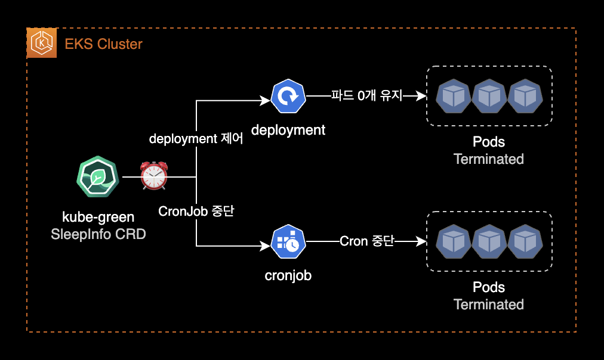
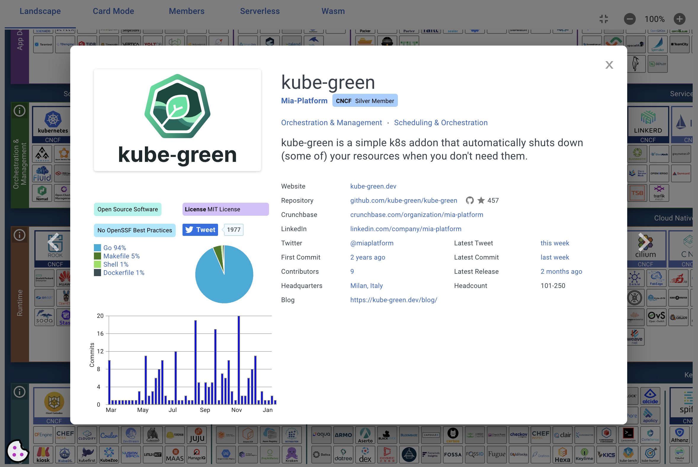
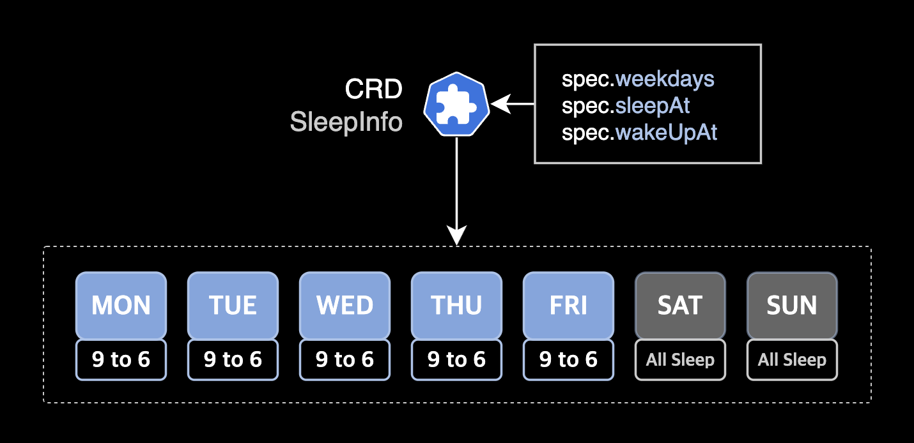
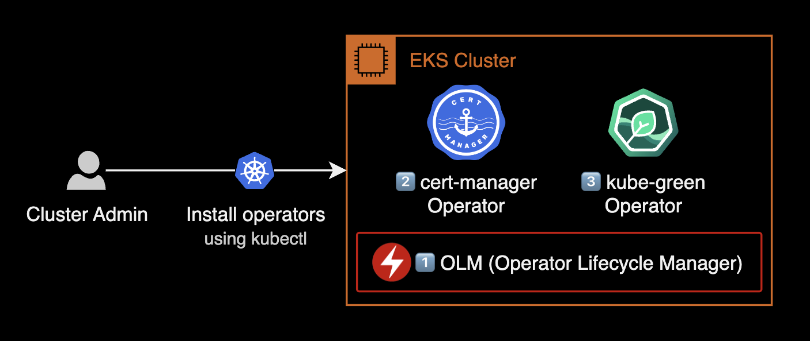
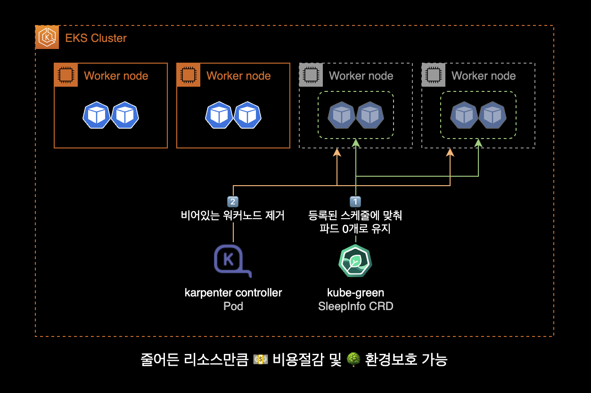
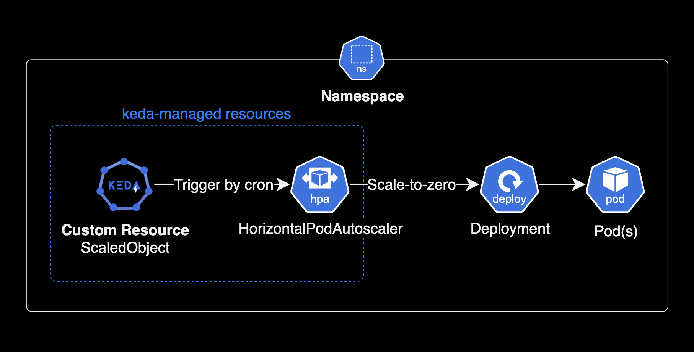

kube-green
개요
리소스를 자동 절약하게 관리해주는 쿠버네티스 에드온인 kube-green을 설치하는 가이드입니다.
배경지식
kube-green
kube-green은 Deployments가 관리하는 Pod, CronJob 등의 리소스가 필요하지 않을 때 해당 리소스를 자동으로 종료하는 간단한 쿠버네티스 애드온입니다.

kube-green을 쿠버네티스 클러스터에 설치해서 운영하면 컴퓨팅 비용 절약과 환경 보호 두 가지를 모두 실천할 수 있습니다.
kube-green은 CNCF Landscape에 Silver 멤버로 등록된 오픈소스 프로젝트이며, 이미 오래 전부터 검증된 쿠버네티스 에드온입니다.

설치 가능한 클러스터 환경
kube-green v0.5.0 기준으로 설치할 수 있는 쿠버네티스 클러스터 환경은 다음과 같습니다.
- Kubernetes 클러스터 버전 :
>= 1.19<= 1.26 - CPU 아키텍처 : ARM64 또는 AMD64
자세한 사항은 kube-green 공식문서의 Prerequisite를 참고합니다.
kube-green이 제어하는 리소스
kube-green은 sleepinfo라고 하는 커스텀 리소스(CRD)를 통해 아래 쿠버네티스 리소스를 제어합니다.
- Deployment
- CronJobs
기본적으로, deployment 리소스는 제외하지 않는다면 sleepinfo에 지정된 시간동안에 파드가 0개로 유지됩니다.
만약 sleepinfo로 deployment와 더불어 cronjobs도 함께 일시 중지하려면 suspendCronJobs 값을 true로 설정합니다.
사용 예시
평일 근무시간에만 dev 클러스터 운영하기

- dev EKS 클러스터의 deployment와 pod를 근무시간 대인 오전 9시부터 오후 6시까지만 운영합니다.
- 이후 시간대인 오후 6시부터 오전 9시까지는 dev 파드를 0개로 유지합니다.
- 토요일과 일요일 주말 시간대에도 dev 파드를 0개로 유지합니다.
- 파드가 0개로 유지되면 Kubernetes Cluster Autoscaler 혹은 Karpenter가 비어있는 워커노드를 자동으로 drain 처리한 후 정리Deprovisioning합니다.
환경
쿠버네티스 클러스터 환경
- EKS v1.24
- x86_64 기반의
t3a.xlargeEC2 - Operator Lifecycle Manager v0.24.0
- cert-manager v1.11.0 : Helm 차트가 아닌 Operator 방식으로 설치합니다.
- kube-green v0.5.0 : Helm 차트가 아닌 Operator 방식으로 설치합니다.
로컬 환경
- OS : macOS Ventura 13.2.1
- Shell : zsh + oh-my-zsh
설치하기
설치과정 요약
EKS 클러스터에 kube-green을 설치하는 과정은 총 3단계로 구성됩니다.

olm설치 : OLMOperator Lifecycle Manager은 Kubernetes Operator를 사용하기 위해 필요한 에드온입니다.cert-manageroperator 설치kube-greenoperator 설치
설치방식
일반적으로 쿠버네티스 클러스터에 어플리케이션을 설치하는 방식은 3가지로 구분됩니다.
- 직접 YAML manifest를 사용하여
kubectl apply로 설치 - Helm 차트 사용
- Kubernetes Operator 사용
이 시나리오에서는 Kubernetes Operator 방식을 활용하여 cert-manager와 kube-green을 설치합니다.
쿠버네티스 오퍼레이터의 이점
쿠버네티스 오퍼레이터 설치 방식의 가장 큰 장점은 애플리케이션을 쿠버네티스 클러스터에 배포하고 관리하는 과정을 자동화할 수 있다는 것입니다. 이렇게 하면 운영자들이 애플리케이션을 더 쉽게 관리하고 업데이트할 수 있으며, 설치 과정도 더 간단해집니다. 결과적으로 시스템을 효율적으로 운영하고 유지할 수 있는 이점을 제공합니다.
OLM 설치
OLM은 쿠버네티스 클러스터에 여러 오퍼레이터의 설치를 도와주고 관리해주는 프레임워크입니다.
OLM는 애플리케이션을 자동으로 관리해주는 설치 마법사 같은 역할을 합니다. OLM을 사용하면 다양한 에드온들을 클러스터에 설치하고 필요할 때 업데이트하고 관리하는 일을 손쉽게 할 수 있습니다.
쿠버네티스 오퍼레이터를 설치하기 위해 클러스터에 OLMOperator Lifecycle Manager을 설치합니다.
이전에 이미 쿠버네티스 클러스터에 OLM을 설치한 경우, 아래 OLM 설치 과정을 건너뛰고 cert-manager operator 설치 단계로 이동합니다.
$ curl -sL https://github.com/operator-framework/operator-lifecycle-manager/releases/download/v0.24.0/install.sh \
| bash -s v0.24.0
2023년 3월 23일 기준으로 최신 버전인 OLM v0.24.0을 설치합니다.
OLM 운영에 필요한 deployment와 Pod 상태를 확인해서 OLM 설치 결과를 확인합니다.
$ kubectl get deploy,pod \
-n olm \
-o wide
Operator Lifecycle Manager 파드는 기본값으로 olm 네임스페이스에 설치됩니다.
cert-manager 설치
kube-green 설치 전에 먼저 cert-manager를 설치합니다.
cert-manager 설치시 참고한 가이드 문서는 다음과 같습니다.
- cert-manager 공식문서의 Option 2: Installing from OperatorHub.io
- cert-manager 공식 OperatorHub.io 페이지
EKS 클러스터에 cert-manager Operator를 설치합니다.
$ kubectl create -f https://operatorhub.io/install/cert-manager.yaml
subscription.operators.coreos.com/my-cert-manager created
operator 리소스 목록을 확인합니다.
$ kubectl get operators
NAME AGE
cert-manager.operators 2m58s
cert-manager operator가 새로 추가되었습니다.
csv(clusterserviceversions) 리소스 목록을 조회합니다.
$ kubectl get csv
NAME DISPLAY VERSION REPLACES PHASE
cert-manager.v1.11.0 cert-manager 1.11.0 cert-manager.v1.10.2 Succeeded
잠시 기다리면 cert-manager Operator 상태가 Installing에서 Succeeded로 변경되며 설치가 완료됩니다.
kube-green 설치
설치방식에 대한 안내
이 가이드에서는 cert-manager와 kube-green 모두 헬름 차트를 사용한 설치 방법이 아닌 쿠버네티스 오퍼레이터 설치 방식을 사용합니다.
EKS 클러스터에 kube-green operator를 설치합니다.
$ kubectl create -f https://operatorhub.io/install/kube-green.yaml
subscription.operators.coreos.com/my-kube-green created
kube-green operator가 생성되었습니다.
클러스터에 생성된 operator 리소스 목록을 확인합니다.
$ kubectl get operators
NAME AGE
cert-manager.operators 11m
kube-green.operators 8s
cert-manager operator와 kube-green operator가 새로 생성된 걸 확인할 수 있습니다.
설치한 kube-green operator의 현재 상태와 버전을 확인합니다.
$ kubectl get csv
NAME DISPLAY VERSION REPLACES PHASE
cert-manager.v1.11.0 cert-manager 1.11.0 cert-manager.v1.10.2 Succeeded
kube-green.v0.5.0 kube-green 0.5.0 kube-green.v0.4.1 Succeeded
잠시 기다리면 kube-green operator가 설치 완료됩니다.
operator 설치가 완료되면 상태값이 Installing에서 Succeeded로 변경되는 걸 확인할 수 있습니다.
구성하기
kube-green operator가 사용하는 CRD 목록을 확인합니다.
$ kubectl api-resources \
--api-group='kube-green.com' \
-o wide
NAME SHORTNAMES APIVERSION NAMESPACED KIND VERBS CATEGORIES
sleepinfos kube-green.com/v1alpha1 true SleepInfo delete,deletecollection,get,list,patch,create,update,watch
kube-green operator는 sleepinfo라고 하는 커스텀 리소스CRD를 사용해서 deployment의 파드를 제어하고 리소스를 절약합니다.
kube-green 동작 테스트를 하기 위한 샘플 SleepInfo yaml을 작성합니다.
$ cat << EOF > sleepinfo-default.yaml
---
apiVersion: kube-green.com/v1alpha1
kind: SleepInfo
metadata:
name: default-sleepinfo
namespace: default # 제어할 네임스페이스 지정
labels:
app: kube-green
maintainer: "younsung.lee"
spec:
weekdays: "*" # 매일
sleepAt: "*:*" # 항상
suspendCronJobs: true # deployments와 cronJob도 같이 종료
timeZone: "Asia/Seoul" # 기준시간은 Seoul
EOF
- default 네임스페이스에 deployments를 1년 365일 내내 0개 파드로 유지하는 SleepInfo 입니다.
spec.suspendCronJobs값이true이므로 CronJobs 리소스도 1년 365일 내내 중지합니다.
default 네임스페이스에 SleepInfo를 생성합니다.
$ kubectl apply -f sleepinfo-default.yaml
default 네임스페이스에 SleepInfo가 생성되었습니다.
$ kubectl get sleepinfo -n default
NAME AGE
default-sleepinfo 136m
같은 네임스페이스의 deployment 상태를 확인합니다.
$ kubectl get pod -n default
NAME READY STATUS RESTARTS AGE
nginx4-57cf9577-6fpcs 2/2 Terminating 0 8m22s
nginx4-57cf9577-qvzxj 2/2 Terminating 0 8m22s
nginx4-57cf9577-vbvzv 2/2 Terminating 0 2d1h
sleepinfo를 생성하자마자 deployments가 관리하는 파드들이 모두 삭제되는 걸 확인할 수 있습니다.
sleepinfo에 의해 영향을 받은 deployment의 최근 이벤트 정보를 확인합니다.
$ kubectl describe deploy \
-n default nginx4 \
| grep -A5 '^Events'
Events:
Type Reason Age From Message
---- ------ ---- ---- -------
Normal ScalingReplicaSet 31m deployment-controller Scaled up replica set nginx4-57cf9577 to 3
Normal ScalingReplicaSet 23m deployment-controller Scaled down replica set nginx4-57cf9577 to 0
sleepinfo 명령에 의해 deployment가 파드를 0개로 유지하는 걸 확인할 수 있습니다.
deployment 정보를 다시 확인합니다.
$ kubectl get deploy -n default
NAME READY UP-TO-DATE AVAILABLE AGE
nginx4 0/0 0 0 34d
SleepInfo에 지정된 시간동안에는 deployment의 파드가 0개로 줄어든 상태로 계속 유지됩니다.
SleepInfo의 요일, 잠자는 시간, 기상 시간에 대한 설정 방법은 kube-green 공식문서를 참고합니다.
apiVersion: kube-green.com/v1alpha1
kind: SleepInfo
metadata:
name: working-hours
spec:
weekdays: "*" # 요일 지정
sleepAt: "20:00" # 잠자는 시간 지정 (Pod 0개로 줄어듬)
wakeUpAt: "08:00" # 깨어나는 시간 지정 (정상 상태로 복구)
...
이것으로 kube-green 설치 및 구성 가이드를 마치도록 하겠습니다.
더 나아가서
kube-green으로 비용 절감하기
쿠버네티스 클러스터 환경에서 kube-green을 단독으로 사용하는 경우 워커노드의 컴퓨팅 비용 절감을 실현하기 어렵습니다.

쿠버네티스 클러스터의 워커 노드를 자동 삭제하고 늘려주는 Kubernetes Cluster Autoscaler 또는 Karpenter를 반드시 kube-green과 같이 조합해서 사용해야만 컴퓨팅 비용 절감을 실현할 수 있습니다.
Karpenter와 조합하기
헬름차트를 사용한 Karpenter 설치 및 구성 가이드는 아래에 있는 제 다른 포스트를 참조하시면 좋습니다.
Karpenter 설치하기
karpenter 헬름 차트 버전 업그레이드
쿠버네티스 클러스터의 노드 오토스케일러인 CACluster Autsocaler 보다는 AWS에서 제공하는 Karpenter가 새 노드를 띄우는 시간이 빠르기 때문에 되도록이면 Karpenter 사용을 권장합니다.
다른 대안
KEDA
특정 시간대에 파드의 scale-to-zero를 적용하는 것은 kube-green만 가능한 것은 아닙니다. KEDAKubernetes-based Event Driven Autoscaling의 경우도 Cron Scaler를 사용하여 scale-to-zero를 지원합니다.

scale-to-zero를 구현하기 위해 KEDA는 커스텀 리소스로 ScaledObject를 사용합니다. kubectl 명령어를 사용해서 KEDA에서 사용하는 Custom Resource 목록을 조회할 수 있습니다.
$ kubectl api-resources --api-group keda.sh
NAME SHORTNAMES APIVERSION NAMESPACED KIND
clustertriggerauthentications cta,clustertriggerauth keda.sh/v1alpha1 false ClusterTriggerAuthentication
scaledjobs sj keda.sh/v1alpha1 true ScaledJob
scaledobjects so keda.sh/v1alpha1 true ScaledObject
triggerauthentications ta,triggerauth keda.sh/v1alpha1 true TriggerAuthentication
아래는 cron scaler를 사용하여 한국시간KST 기준으로 매일 오전 9시부터 ~ 18시까지만 10개의 파드를 운영하고, 업무시간 외에는 비용 절감을 위해 scale-to-zero를 구현하는 예제입니다.
apiVersion: keda.sh/v1alpha1
kind: ScaledObject
metadata:
name: cron-scaledobject
namespace: default
spec:
scaleTargetRef:
apiVersion: apps/v1
kind: Deployment
name: my-deployment
minReplicaCount: 0
cooldownPeriod: 300
triggers:
- type: cron
metadata:
timezone: "Asia/Seoul" # The acceptable values would be a value from the IANA Time Zone Database.
start: "0 9 * * *" # At 9:00 AM
end: "0 18 * * *" # At 6:00 PM
desiredReplicas: "5"
- 근무 시간 외에 scale-to-zero를 적용하려면 ScaledObject에서
minReplicaCount: 0을 설정하고 근무 시간 동안에desiredReplicas로 복제본을 늘려야 합니다. - 기본적으로 ScaledObject의
cooldownPeriod설정은 5분(300초)이므로 실제 파드 축소는 cron 일정 종료 매개변수로부터 5분 후에 발생합니다.
KEDA에 대한 더 자세한 정보는 KEDA 공식 홈페이지와 KEDA Github에서 확인 가능합니다.
참고자료
kube-green
Github kube-green
kube-green docs
KEDA
KEDA docs
Github keda